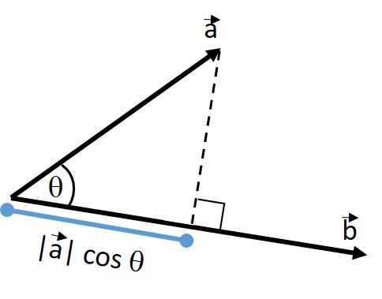

Chapter 1: Introduction
Introduction to Python as it is used in this lecture¶

part of
MSE672: Introduction to Transmission Electron Microscopy
Spring 2026 by Gerd Duscher
Microscopy Facilities Institute of Advanced Materials & Manufacturing Materials Science & Engineering The University of Tennessee, Knoxville
Background and methods to analysis and quantification of data acquired with transmission electron microscopes.
Coding¶
First, you do not need to program anything, however, you will have to change the values of input parameters in the code cells. Of course, you are encouraged to modify the code in order to explore the data analysis methods, what can go wrong.
In this book, we will use the python program language. For this language, a lot of packages are available that provide algorithms for all common mathematical and statistical needs.
In this book we rely most heavily on the standard numerical and scientific library: numpy and scipy
The philosophy of this book is not to reinvent the wheel but to use those package which are highly optimized. The code should be as easy to read as possible, which means * the variable names are chosen in the same manner as in the formulas, * the routines of the different packages are not wrapped in others * the code is written step by step and not organized in classes
An Example¶
We will do a lot of vector algebra so as an example we want to compute the angle between two vectors,
which is calculated by the dot product: $:nbsphinx-math:vec{a} \cdot `:nbsphinx-math:vec{b}` = \left| \vec{a} \right| \left| \vec{b} \right| \cos `(:nbsphinx-math:theta`) $
$ \arccos `:nbsphinx-math:left`( \frac{\vec{a} \cdot \vec{b}} {\left| \vec{a} \right| \left| \vec{b} \right|} \right) = :nbsphinx-math:`theta `$
The dot product is really the projection of one vector onto the other one:

[1]:
# We need to import the numpy package
import numpy as np
# We define the two vectors
a_vector = [1, 1, 2]
b_vector = [0, 5, 3]
# calculate the lengths of the vectors
a_length = np.linalg.norm(a_vector)
b_length = np.linalg.norm(b_vector)
#now the angle between vectors a and b according to above formula
theta = np.arccos(np.dot(a_vector, b_vector) / (a_length * b_length) )
print(f'The angle between vectors a and b is {np.degrees(theta):.2f}°' )
The angle between vectors a and b is 39.63°
Change the vectors now (python is picky about commas and kind of brackets, so leave those alone).
Vector Norm¶
In the above formula we use the norm function of the Linear Algebra package linalg of numpy
Of course the dot product of a vector with itself would give the square of the length of the vector:
[2]:
print('Square root of dot product of vector with itself')
print(np.sqrt(np.dot(a_vector,a_vector)))
print('\n Two other ways to calculate this')
print(np.sqrt(a_vector[0]**2+a_vector[1]**2+a_vector[2]**2))
print(np.linalg.norm(a_vector))
Square root of dot product of vector with itself
2.449489742783178
Two other ways to calculate this
2.449489742783178
2.449489742783178
In crystallography, we would use the normed (or unit) vectors \(\hat{a}\) and \(\hat{b}\) which are defined as \(\hat{a} = \frac{\vec{a}}{\left| \vec{a} \right|}\).
The dot product is then directly the cos of the angle:
$:nbsphinx-math:hat{a} \cdot `:nbsphinx-math:hat{b}` = \cos `(:nbsphinx-math:theta`) $
[3]:
# unit vectors
a_normed = a_vector/a_length
b_normed = b_vector/b_length
theta = np.arccos(np.dot(a_normed, b_normed) )
print(f'The angle between vectors a and b is {np.degrees(theta):.2f}°' )
The angle between vectors a and b is 39.63°
Functions¶
For a task you use more often you might want to define a function to do that task in a reproducible manner.
In the remainder of the course most computer code in the code cell is also available in the TEMlib library to improve readability of the notebooks for analyzing data.
One always makes sure that one comments those functions.
[4]:
def angle_between_two_vectors(vector1, vector2):
"""
Calculation of the angle between two vectors of the same dimension by arccos of the dot product
Input:
------
vector1, vector2: two vectors as lists or numpy arrays
Output:
-------
angle: angle between the vectors in radians
"""
# calculate the lengths of the vectors
vector1_length = np.linalg.norm(vector1)
vector2_length = np.linalg.norm(vector2)
#now the angle between vectors a and b according to above formula
angle = np.arccos(np.dot(vector1/vector1_length, vector2/vector2_length) )
return angle #in radians
help(angle_between_two_vectors)
theta = angle_between_two_vectors(a_vector, b_vector)
print(f'The angle between vectors a: {a_vector} and b: {b_vector} is {np.degrees(theta):.2f}°')
Help on function angle_between_two_vectors in module __main__:
angle_between_two_vectors(vector1, vector2)
Calculation of the angle between two vectors of the same dimension by arccos of the dot product
Input:
------
vector1, vector2: two vectors as lists or numpy arrays
Output:
-------
angle: angle between the vectors in radians
The angle between vectors a: [1, 1, 2] and b: [0, 5, 3] is 39.63°
Python Usage in this Course¶
We will not use a python function as shown above, because we actually just wrapped the arccos (dot product) functions and did not do anything new.
While this may be a good idea to make a code more readable, this approach also hides a lot of what is going on in a program. Also, such a code tends to be rather splintered and one has to look layer by layer deeper if one wants to find out how something is calculated exactly.
Therefore, in this course, we will use functions only for more complex issues and avoid wrapping. Obviously, there are choices to be made and so the optimum may not always be struck. Please let me know any improvement you feel make things easier to grasp.Front
Effective Use of numpy¶
The real power of numpy will be evident if we code a function that will do the angles of a whole vector field.
[5]:
def angles_to_first_vector(vector_field):
"""
Calculation of the angle first vector and the whole vector field by arccos of the dot product
Input:
------
vector_field: a list or numpy array of vectors as lists or numpy arrays
Output:
-------
angles: angles between first and all vectors in radians
"""
# calculate the normed vectors
norm= np.linalg.norm(vector_field, axis=1) # our vectors are along axis 1
vector_field_normed = vector_field/norm[:,np.newaxis] #divide each vector by its norm
#now the angle between each vector in the vector field and the first vector according to above formula
dot_products = np.dot(vector_field_normed, vector_field_normed[0])
### To avoid rounding error induced confusion
dot_products[dot_products > 1] = 1
dot_products[dot_products <-1] =-1
angles = np.arccos(dot_products)
return angles #in radians
# Now we define a vector field
vectors = [a_vector, b_vector, [3, 2, 1]]
# and then we calculate the angles of the first vector to the whole field
vector_field_angles = angles_to_first_vector(vectors)
print('angles of vector field to first vector')
print(np.round(np.degrees(vector_field_angles),3))
angles of vector field to first vector
[ 0. 39.632 40.203]
Libraries and Classes¶
The functions used in this lecture are organized in libraries.
For a more modern programming approach they could also be grouped in classes, but classes put another layer between the notebook and code, which is desirable for abstraction but not necessarily for understanding.
So, within this course the functions will be made available in libraries, which can be wrapped in classes for a more monolithic program.
A graphical user interface (GUI) was consciously omitted in this course to encourage the user to interact withthe code. Start now and change the vectors and see how the angle will change.
A word of caution:¶
A notebook can become confusing, if one does not go through it in sequential order, because the values of parameters can be changed at any stage in any code cell without the other cells having any knowledge about that.
A program or function will not have that kind of confusing tendency, and therefore, once we understand a topic, a comprehensive function will be provided, like in the case of the angle function. If in doubt, let the notebook run all the way through.